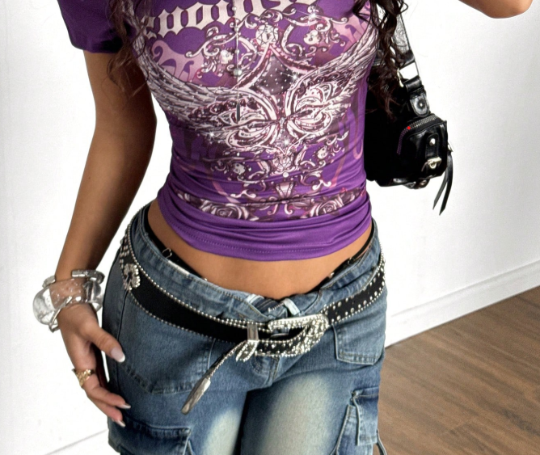
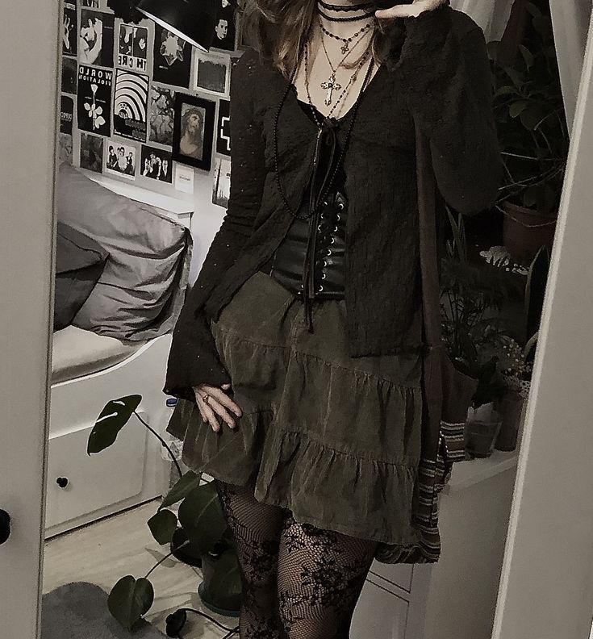
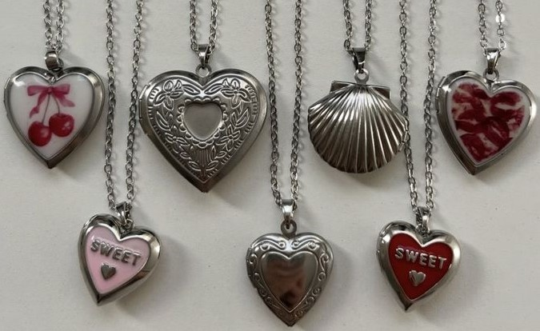
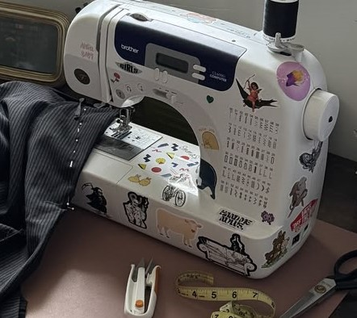
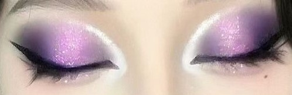
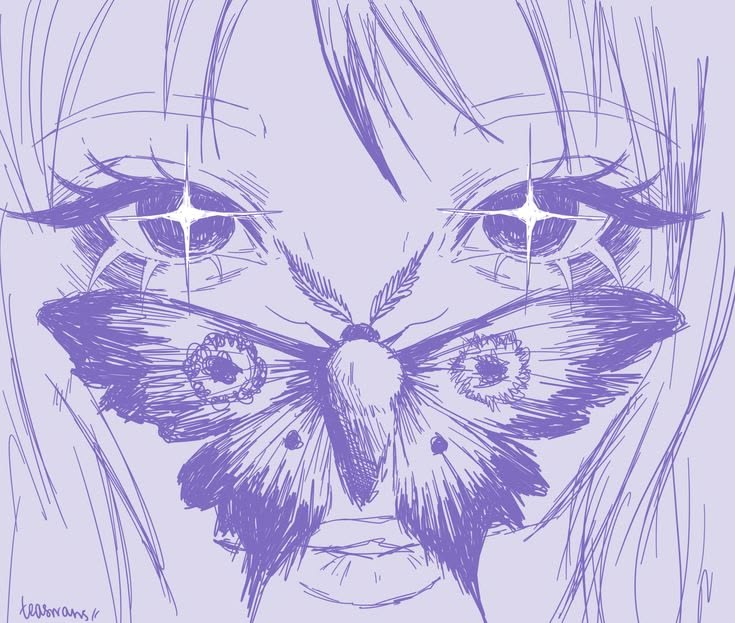
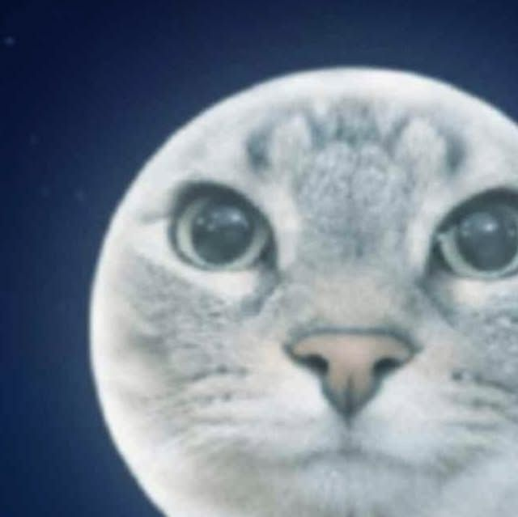
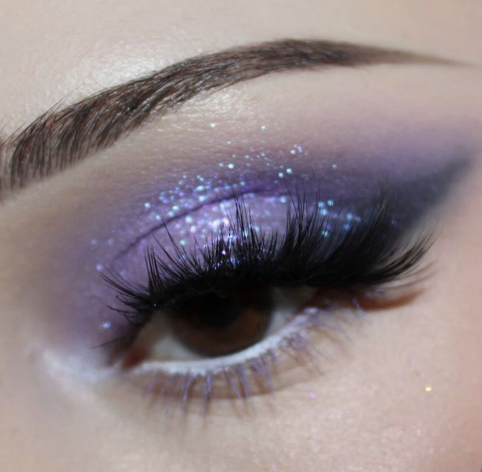
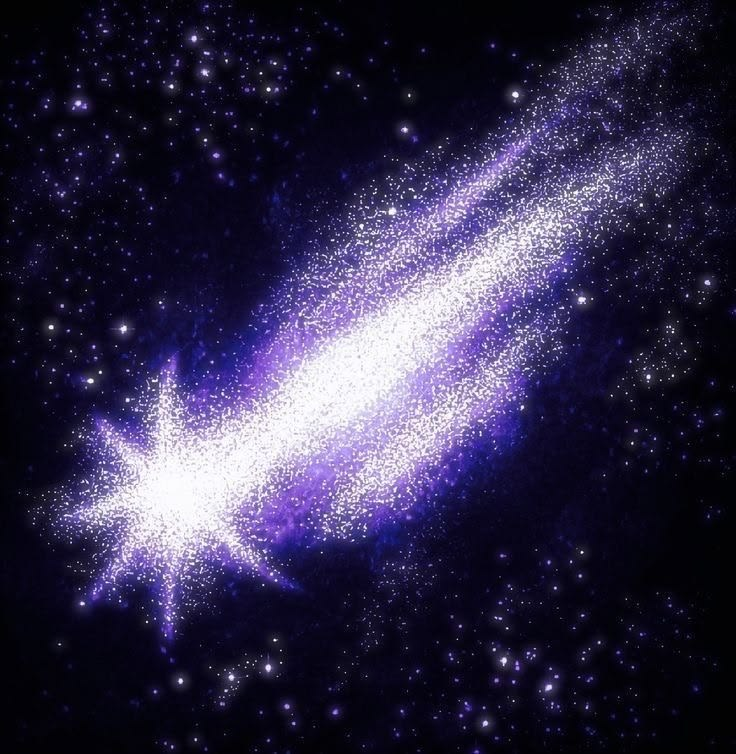

✦ TENDÊNCIA
Y2K de volta
calça de cintura baixa, top cropped e correntes: o look anos 2000 está em alta.

★ moda · beleza · horóscopo · recados ★
oi! seja bem-vinda ao Stargirl — seu espaço favorito da internet. aqui você encontra moda Y2K, dicas de beleza, horóscopo e muito mais ♡

calça de cintura baixa, top cropped e correntes: o look anos 2000 está em alta.

fairycore ou cyber grunge? qual estética combina com você?

presilhas, bolsas e brincos: os acessórios de coração que dominam o verão.

strass, patches e bordados: guia completo para iniciantes.

DESTAQUEo tutorial completo para recriar o make anos 2000: sombra metálica, glitter chunky e blush rosado. passo a passo fácil!
ver tutorial ▶rotina de 3 passos para pele hidratada.
corações e estrelas: como fazer em casa.
mechas e presilhas coloridas em alta.
como usar glitter sem sofrimento.
✦ previsões para 19 de maio de 2026 — escolha seu signo ✦
deixe sua mensagem ♡

seu site é lindo demais! adoro as dicas de moda ♡ continua assim!

vim pelo horóscopo e fiquei pelo site todo hehe. muito fofo! ★

o tutorial de make Y2K mudou minha vida!! obrigada stargirl ✦

melhor site dos anos 2000!! que saudade dessa época ♡ beijos!
21 mar – 19 abr · Fogo · Marte
Vênus ilumina sua vida amorosa hoje! Uma conversa sincera vai fortalecer a conexão. Solteiras: alguém próximo pode surpreender. Abra seu coração com coragem!
Sua determinação está em alta. Projetos parados voltam a caminhar. Se tem apresentação hoje, confie em si — o resultado será melhor do que espera.
A Lua em trígono com Marte te enche de disposição. Cor do dia: vermelho coral. Número da sorte: 7.
20 abr – 20 mai · Terra · Vênus
Com o Sol ainda em Touro, você está radiante! Relacionamentos ganham profundidade. Para as solteiras, hoje é ótimo dia para dar o primeiro passo.
Sua persistência dá resultados hoje. Um elogio inesperado pode vir de onde você menos espera.
Dia de abundância e beleza. Cuide de você com carinho. Cor do dia: verde esmeralda. Número: 6.
21 mai – 20 jun · Ar · Mercúrio
Mercúrio favorece a comunicação hoje. Diga o que sente sem rodeios — sua leveza é irresistível.
Mente afiada e criativa. Ótimo dia para apresentações e tudo que envolve falar ou escrever.
A curiosidade é seu superpoder. Cor do dia: amarelo canário. Número: 3.
21 jun – 22 jul · Água · Lua
Sua intuição emocional está aguçada. Sinta antes de falar. Reserve tempo de qualidade com quem importa.
Cuidado com o perfeccionismo. Bom o suficiente já é excelente hoje. Confie no seu processo.
Autocuidado é a palavra do dia. Cor do dia: azul petróleo. Número: 2.
23 jul – 22 ago · Fogo · Sol
O Sol te abençoa com carisma irresistível. Você está magnética — as pessoas são atraídas naturalmente pela sua presença.
Dia de brilhar! Apresentações e trabalhos em grupo vão muito bem. Seja ousada e apareça.
Sua autoestima está no pico. Cor do dia: dourado. Número: 1.
23 ago – 22 set · Terra · Mercúrio
Pequenos gestos de cuidado falam mais alto que grandes declarações. Mostre afeto de formas práticas.
Sua atenção aos detalhes faz diferença hoje. Revise, organize, finalize — o capricho será notado.
Mente organizada, vida organizada. Cor do dia: verde sálvia. Número: 5.
23 set – 22 out · Ar · Vênus
Vênus, seu planeta, está em posição privilegiada. Harmonia e conexão em alta. Relacionamentos se aprofundam com facilidade.
Sua habilidade de mediar conflitos é valorizada hoje. Trabalhos em equipe fluem com leveza.
Beleza e estética te inspiram. Cor do dia: rosa nude. Número: 6.
23 out – 21 nov · Água · Plutão
Hoje é bom dia para vulnerabilidade — mostre um lado mais suave sem perder sua essência.
Foco cirúrgico. Você consegue ir fundo em tudo. Pesquisas e análises são suas especialidades.
Confie na sua intuição — ela não erra. Cor do dia: vinho. Número: 8.
22 nov – 21 dez · Fogo · Júpiter
Sua energia expansiva é contagiante. Você atrai quem tem o mesmo espírito aventureiro.
Júpiter traz boa sorte. Ótimo dia para aprender algo novo e buscar perspectivas frescas.
Saia da rotina em pelo menos um aspecto. Cor do dia: laranja queimado. Número: 9.
22 dez – 19 jan · Terra · Saturno
Você é discreta no amor, mas profundamente leal. Alguém pode reconhecer exatamente isso hoje.
Saturno recompensa disciplina. Tudo que você construiu com esforço começa a dar retorno.
Reconheça suas conquistas. Cor do dia: cinza grafite. Número: 4.
20 jan – 18 fev · Ar · Urano
Sua originalidade encanta. Ser diferente é seu maior charme. Conexões intelectuais estão favorecidas.
Urano traz flashes de genialidade. Anote suas ideias — as mais "malucas" podem ser as melhores.
Expresse quem você é sem filtros. Cor do dia: azul elétrico. Número: 11.
19 fev – 20 mar · Água · Netuno
Netuno envolve seu coração em magia hoje. Você está mais sensível e romântica — e isso é lindo.
Criatividade e empatia são seus diferenciais. Trabalhos artísticos e colaborativos estão favorecidos.
Dedique tempo à arte ou à música. Cor do dia: lilás. Número: 12.